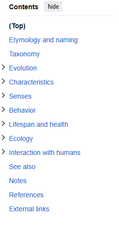
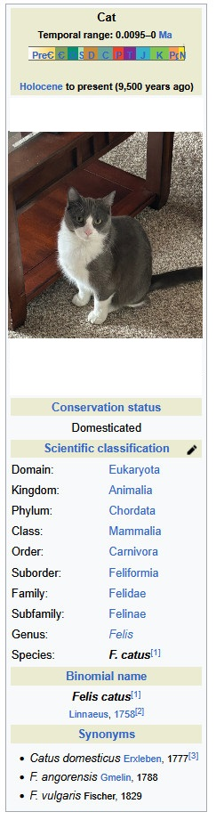
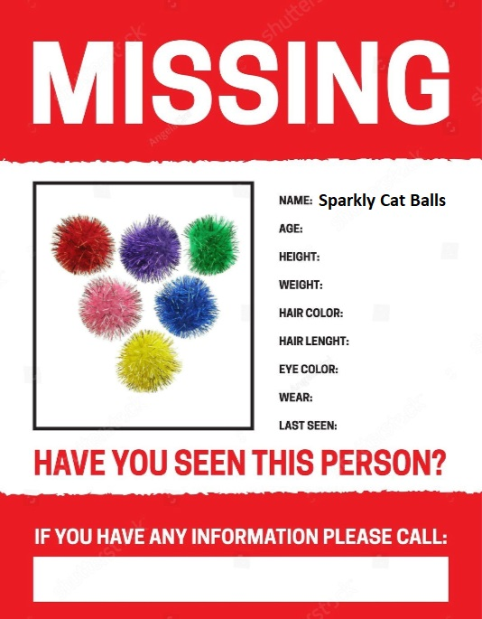

Elle (cat)
Article
Talk
Read
View Source
View History
Tools
From Wikipedia, the free encyclopedia

An average account of one who met Elle (there are many such accounts):
"From the moment I met your cat, I knew she was something special. I’ve
encountered many cats in my life, but few have left such a lasting
impression as she did. From her gentle demeanor to her playful antics,
every moment spent in her company was a true delight. It’s not often
that you meet a feline companion with such a perfect balance of
intelligence, affection, and independence, but your cat embodies all
those qualities effortlessly. The first thing that stood out about her
was her striking appearance. Whether she was basking in a sunbeam or
prancing gracefully across the room, she carried herself with an
undeniable elegance. Her soft fur was a testament to how well-loved and
cared for she is, and I found myself unable to resist giving her gentle
strokes whenever she sauntered over for attention. Her eyes, bright and
expressive, conveyed a depth of understanding that made our interactions
feel even more meaningful. Beyond her beauty, her personality truly
stole my heart. She had a way of making me feel both welcomed and
entertained. She was affectionate but never demanding, knowing just the
right moments to nuzzle against my leg or curl up beside me on the
couch. The gentle purring that emanated from her whenever she was
content was soothing, like a calming melody in the background of our
time together. It was clear that she possessed a natural warmth that
made it impossible not to adore her. What truly fascinated me, however,
was her playful and curious nature. Watching her explore the environment
with such enthusiasm was a joy in itself. Whether she was chasing a
stray piece of yarn, pouncing on an unsuspecting toy, or engaging in an
acrobatic display of agility, she exuded boundless energy. Her
intelligence shone through in the way she solved little puzzles, figured
out how to open doors, or responded to certain words and cues. She was
the perfect mix of mischievous and well-behaved, keeping me entertained
without ever crossing the line into troublemaking. One of the most
memorable moments I shared with her was when she decided to sit on my
lap unprompted. She had been circling me for a while, giving me a few
curious glances before finally deciding that I was worthy of her trust.
When she finally settled in, curling up comfortably, I felt a true sense
of companionship. She wasn’t just a pet; she was a friend, one who chose
to share her time and affection with me. That small moment solidified my
admiration for her. It’s rare to meet an animal that feels like an
instant kindred spirit, but that’s exactly how I felt about your cat.
She possesses a charm that is impossible to ignore, a personality that
is both endearing and captivating. I can only imagine the countless
wonderful moments you must share with her on a daily basis. If ever
there was a cat deserving of the title “the perfect feline companion,”
she would undoubtedly be a top contender. Spending time with her was an
experience I will always cherish." - ChatGPT
List of Crimes
| Crime | Evidence |
|---|---|
|
Destruction of Property (my couch) Wis. Stat. § 943.01 Class A Misdemeanor |
 |
|
Theft Wis. Stat. § 943.20 Class A misdemeanor: For theft of property valued at or under $2,500 |
 |
|
Introduction of Pollutants to the Water Supply Federal Clean Water Act (CWA) Sentenced to indefinite detention in domestic blacksite (my apartment) |
 |
Early Life
Elle was born on a stormy night beneath the rusted frame of an abandoned
truck, but fate had bigger plans for her than mere survival. From the
moment she opened her eyes, the world seemed to pull her into the
extraordinary. At six weeks old, after a gang of raccoons scattered her
family, Elle stumbled into the heart of a secret underground
resistance—an elite network of alley cats who communicated through
cryptic scratches on dumpsters and moonlit rendezvous. Their mission? To
thwart the plans of the Canine Syndicate, a pack of cunning dogs that
sought control over the city’s food supply. Elle trained under Luna, a
legendary feline spy who had infiltrated human government buildings and
once stolen classified documents by knocking them off desks. Through
rigorous rooftop chases and daring leaps over traffic, Elle honed her
skills, learning to land soundlessly and vanish into the night like a
shadow. Her biggest mission came when the Canine Syndicate secured a
warehouse filled with the city's most coveted prize—an endless supply of
tuna cans. Elle, now a sleek and fearless warrior, led a high-stakes
heist. Dodging security cameras, outmaneuvering guard dogs, and using
her whiskers to detect tripwires, she infiltrated the facility. At the
last moment, Brutus, the Syndicate’s enforcer, blocked her escape. They
fought atop towering shelves, dodging falling cans like feline action
heroes. With a final, gravity-defying spin, Elle sent Brutus tumbling
into a pile of dog treats, sealing her victory. Days later, a human
found Elle lounging atop a rooftop, victorious yet exhausted. They
scooped her up, whispering words of kindness. She allowed it—after all,
even warriors deserved a throne. As she curled into their arms, she
purred. The city was safe… for now.